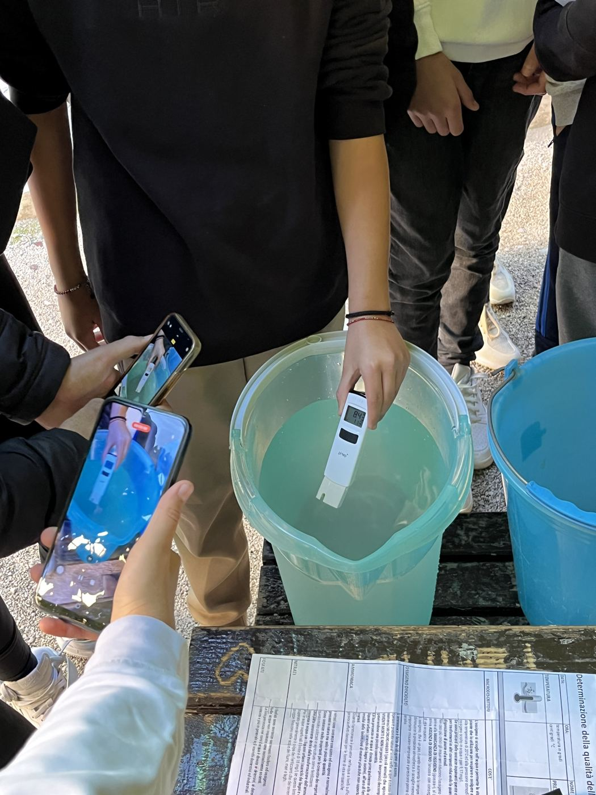
Conduttimetro tascabile
Il DiST 3 HI98303 si immerge in acqua e legge conducibilità e temperatura. Misura fino a 2.000 µS/cm.
Come si raccolgono i dati dell'Aniene: chi forma chi, quali strumenti usano volontari e studenti, che cosa misurano e quali limiti hanno le misure.
Ogni mese, nello stesso giorno, i gruppi locali scendono al fiume con lo stesso kit e la stessa procedura. Le persone che hanno già esperienza formano quelle nuove, così la rete cresce di campagna in campagna.
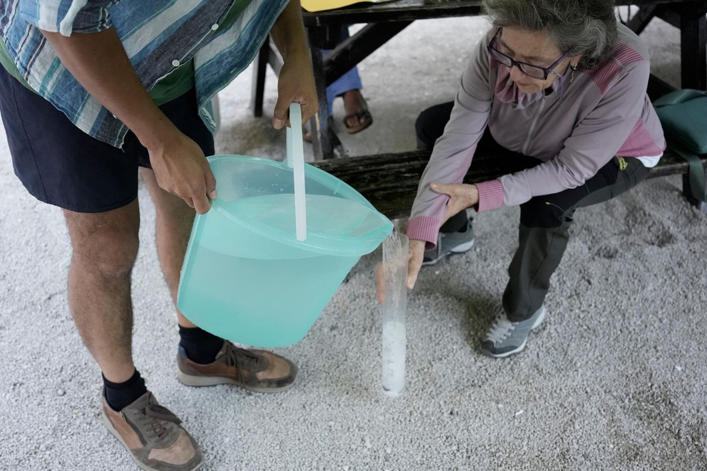
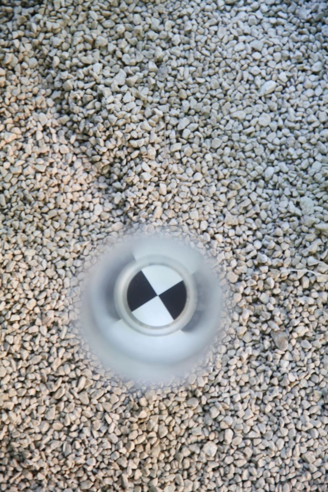
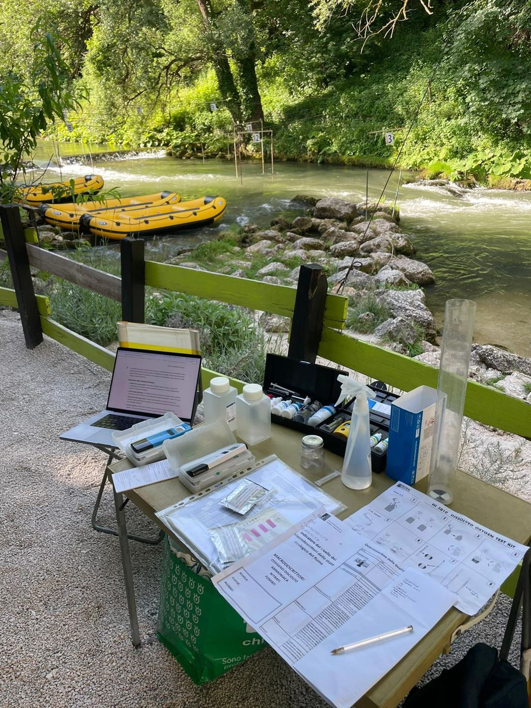
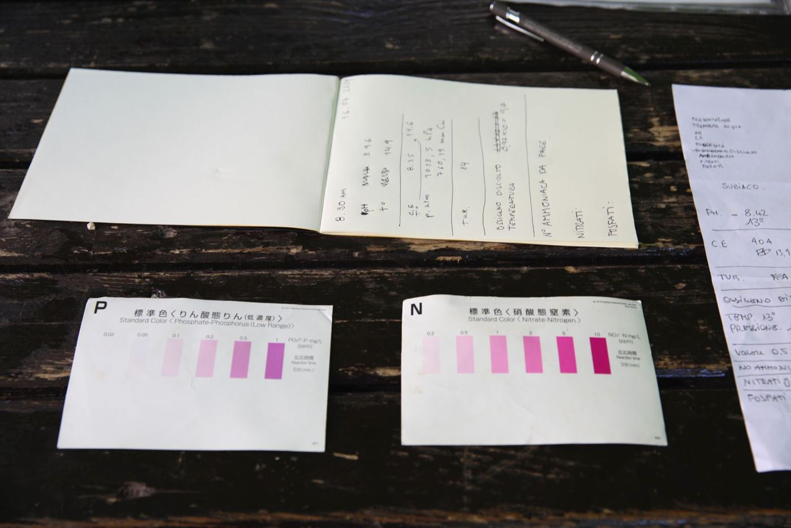
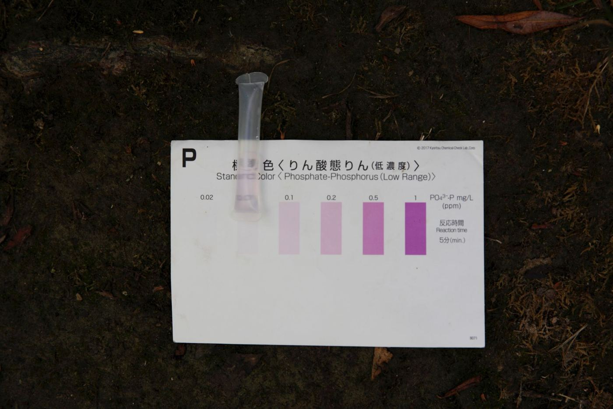
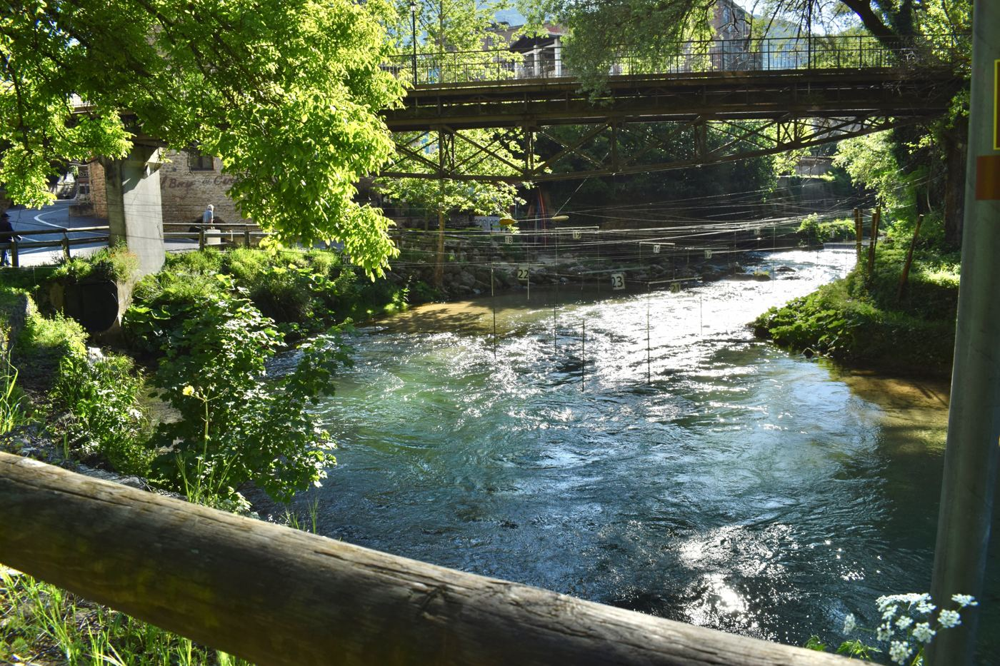
Strumenti semplici e a basso costo, usati dopo incontri di formazione. Ognuno ha una sua precisione, e tenerne conto è parte del lavoro: per questo qui trovi anche come leggere i numeri.

Il DiST 3 HI98303 si immerge in acqua e legge conducibilità e temperatura. Misura fino a 2.000 µS/cm.
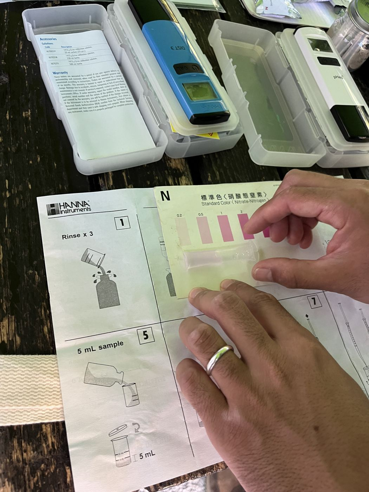
Il kit di Earthwatch usa provette con reagenti: il colore indica in quale intervallo cade il nitrato o il fosfato, e il tubo di Secchi stima la torbidità.
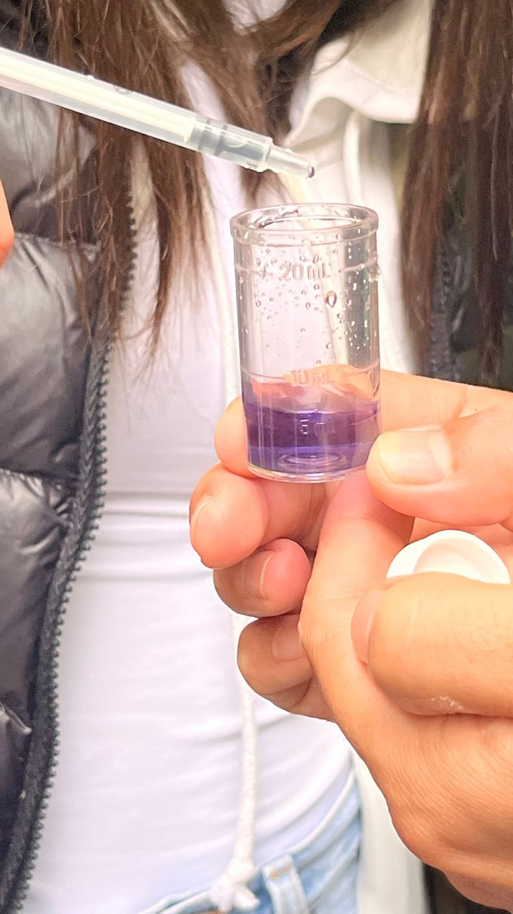
Al kit HI3824 si aggiunge un fotometro tascabile (da 0 a 99,9 ppm): il colore del campione non si legge a occhio ma con un sensore di luce, più preciso.
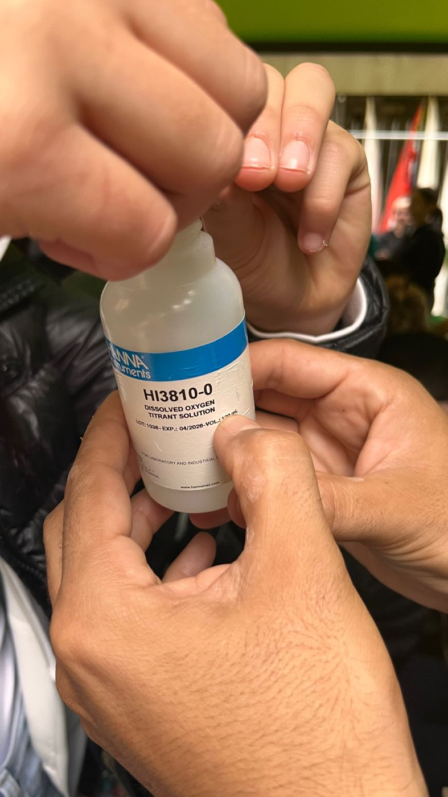
Il kit HI3810 applica una titolazione Winkler modificata: si aggiungono reagenti al campione finché il colore cambia, e la quantità usata dà l'ossigeno disciolto.
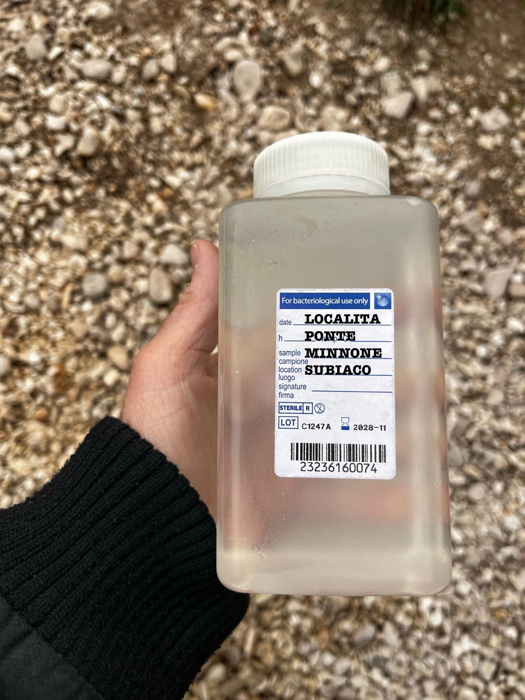
Sulle piastre HyServe Compact Dry si deposita 1 ml di campione, diluito se serve. Dopo circa 24 ore a 36 °C si contano le colonie blu. È l'analisi che richiede più esperienza.
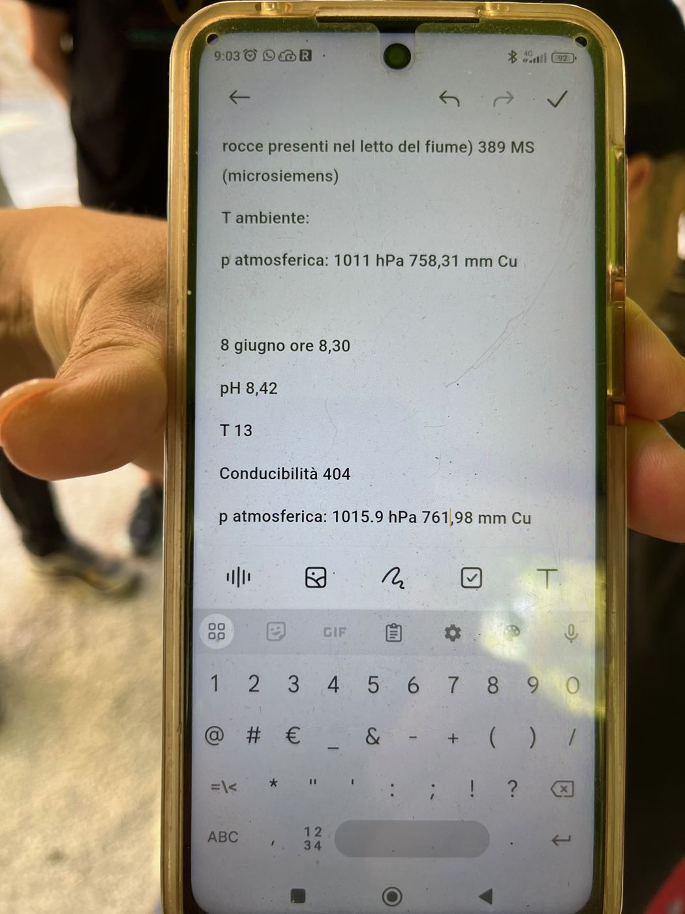
Il pH è stato rilevato con strumentazione low-cost. Alle misure si aggiungono le note dei volontari: schiuma, alghe, odori, presenza di pesci.
Le misure di citizen science sono preziose perché sono tante, regolari e diffuse. Hanno però un margine di errore più ampio delle analisi di laboratorio, e chi le usa deve saperlo.
Il kit FreshWater Watch dice in quale intervallo cade il nitrato o il fosfato, per esempio tra 0,2 e 0,5 mg/L. Nei grafici usiamo il punto medio dell'intervallo.
Il tubo di Secchi non distingue la torbidità sotto 14 NTU e il conduttimetro arriva a 2.000 µS/cm. Su una piastra per E. coli si deposita 1 ml di campione, quindi una sola colonia vale già 100 UFC/100 ml.
Chi monitora è formato ma spesso non è tecnico di laboratorio. Leggere un colore o contare le colonie lascia spazio a piccole differenze tra persone e tra campagne.
Ogni campione fotografa l'acqua in un giorno e a un'ora precisi. Pioggia, portata e stagione possono cambiare molto i valori.
Le classi di qualità usate qui sono indicative e non equivalgono alla classificazione ufficiale. Un valore critico segnala dove guardare: tocca agli enti preposti verificarne la causa.
Per ogni parametro: che cos'è, perché conta, e il suo andamento medio. Apri una scheda per vederlo nella dashboard.
Caricamento dei parametri…
Per dare un senso ai numeri la relazione usa le classi del LIMeco, l'indice dei macrodescrittori previsto dalla normativa sullo stato dei corpi idrici, e le classi del LIM per E. coli. I colori della piattaforma seguono queste cinque classi.
| Parametro | Elevato | Buono | Sufficiente | Scarso | Cattivo |
|---|---|---|---|---|---|
| Azoto nitrico (mg/L) | < 0,6 | ≤ 1,2 | ≤ 2,4 | ≤ 4,8 | > 4,8 |
| Ammonio (mg/L) | < 0,03 | ≤ 0,06 | ≤ 0,12 | ≤ 0,24 | > 0,24 |
| Fosforo (mg/L) * | ≤ 0,05 | ≤ 0,10 | ≤ 0,20 | ≤ 0,40 | > 0,40 |
| Scostamento da 100% O₂ | ≤ 10 | ≤ 20 | ≤ 40 | ≤ 80 | > 80 |
| E. coli (UFC/100 ml) | ≤ 100 | ≤ 1.000 | ≤ 5.000 | ≤ 20.000 | > 20.000 |
| LIMeco (punteggio) | ≥ 0,66 | ≥ 0,50 | ≥ 0,33 | ≥ 0,17 | < 0,17 |
* Le classi riguardano il fosforo totale. Il monitoraggio misura l'ortofosfato, che ne è la parte principale ma non tutta: il confronto è solo indicativo e la classe reale potrebbe essere uguale o peggiore.
Come sono stati letti, controllati e messi a confronto i dati pubblicati qui. Ogni modifica rispetto all'Excel è registrata.
Nell'Excel 2023/24 diversi valori di fosfati, nitrati e ammonio sono arrotondati a una cifra o riportano l'estremo della classe del kit. I grafici della relazione conservano il valore completo, e abbiamo usato quello.
| Tipo | Quanti valori | Che cosa significa |
|---|
Nella dashboard trovi ogni misura, campagna per campagna, con il valore usato e quello originale.